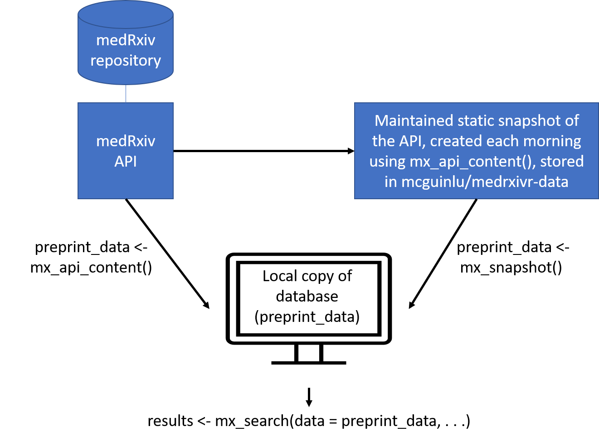

An increasingly important source of health-related bibliographic content are preprints - preliminary versions of research articles that have yet to undergo peer review. The two preprint repositories most relevant to health-related sciences are medRxiv and bioRxiv, both of which are operated by the Cold Spring Harbor Laboratory.
The goal of the medrxivr R package is two-fold. In the first instance, it provides programmatic access to the Cold Spring Harbour Laboratory (CSHL) API, allowing users to easily download medRxiv and bioRxiv preprint metadata (e.g. title, abstract, publication date, author list, etc) into R. The package also provides access to a maintained static snapshot of the medRxiv repository (see Data sources). Secondly, medrxivr provides functions to search the downloaded preprint records using regular expressions and Boolean logic, as well as helper functions that allow users to export their search results to a .BIB file for easy import to a reference manager and to download the full-text PDFs of preprints matching their search criteria.
Installation
To install the stable version of the package from CRAN:
install.packages("medrxivr")
library(medrxivr)Alternatively, to install the development version from GitHub, use the following code:
install.packages("devtools")
devtools::install_github("ropensci/medrxivr")
library(medrxivr)Data sources
medRxiv data
medrixvr provides two ways to access medRxiv data:
-
mx_api_content(server = "medrxiv")creates a local copy of all data available from the medRxiv API at the time the function is run.
# Get a copy of the database from the live medRxiv API endpoint
preprint_data <- mx_api_content() -
mx_snapshot()provides access to a static snapshot of the medRxiv database. The snapshot is created each morning at 6am usingmx_api_content()and is stored as CSV file in the medrxivr-data repository. This method does not rely on the API (which can become unavailable during peak usage times) and is usually faster (as it reads data from a CSV rather than having to re-extract it from the API). Discrepancies between the most recent static snapshot and the live database can be assessed usingmx_crosscheck().
# Get a copy of the database from the daily snapshot
preprint_data <- mx_snapshot() The relationship between the two methods for the medRxiv database is summarised in the figure below:

bioRxiv data
Only one data source exists for the bioRxiv repository:
-
mx_api_content(server = "biorxiv")creates a local copy of all data available from the bioRxiv API endpoint at the time the function is run. Note: due to it’s size, downloading a complete copy of the bioRxiv repository in this manner takes a long time (~ 1 hour).
# Get a copy of the database from the live bioRxiv API endpoint
preprint_data <- mx_api_content(server = "biorxiv")Performing your search
Once you have created a local copy of either the medRxiv or bioRxiv preprint database, you can pass this object (preprint_data in the examples above) to mx_search() to search the preprint records using an advanced search strategy.
# Import the medrxiv database
preprint_data <- mx_snapshot()
#> Using medRxiv snapshot - 2021-01-28 09:31
# Perform a simple search
results <- mx_search(data = preprint_data,
query ="dementia")
#> Found 192 record(s) matching your search.
# Perform an advanced search
topic1 <- c("dementia","vascular","alzheimer's") # Combined with Boolean OR
topic2 <- c("lipids","statins","cholesterol") # Combined with Boolean OR
myquery <- list(topic1, topic2) # Combined with Boolean AND
results <- mx_search(data = preprint_data,
query = myquery)
#> Found 70 record(s) matching your search.You can also explore which search terms are contributing most to your search by setting report = TRUE:
results <- mx_search(data = preprint_data,
query = myquery,
report = TRUE)
#> Found 70 record(s) matching your search.
#> Total topic 1 records: 1078
#> dementia: 192
#> vascular: 917
#> alzheimer's: 0
#> Total topic 2 records: 203
#> lipids: 74
#> statins: 25
#> cholesterol: 136Further functionality
Export records identified by your search to a .BIB file
Pass the results of your search above (the results object) to the mx_export() to export references for preprints matching your search results to a .BIB file so that they can be easily imported into a reference manager (e.g. Zotero, Mendeley).
mx_export(data = results,
file = "mx_search_results.bib")Download PDFs for records returned by your search
Pass the results of your search above (the results object) to the mx_download() function to download a copy of the PDF for each record found by your search.
mx_download(results, # Object returned by mx_search(), above
"pdf/", # Directory to save PDFs to
create = TRUE) # Create the directory if it doesn't existAccessing the raw API data
By default, the mx_api_*() functions clean the data returned by the API for use with other medrxivr functions.
To access the raw data returned by the API, the clean argument should set to FALSE:
mx_api_content(to_date = "2019-07-01", clean = FALSE)See this article for more details.
Detailed guidance
Detailed guidance, including advice on how to design complex search strategies, is available on the medrxivr website.
Linked repositories
See here for the code used to take the daily snapshot and the code that powers the medrxivr web app.
Other tools/packages for working with medRxiv/bioRxiv data
The focus of medrxivr is on providing tools to allow users to import and then search medRxiv and bioRxiv data. Below are a list of complementary packages that provide distinct but related functionality when working with medRxiv and bioRxiv data:
-
rbiorxivby Nicholas Fraser provides access to the same medRxiv and bioRxiv content data asmedrxivr, but also provides access to the usage data (e.g. downloads per month) that the Cold Spring Harbour Laboratory API offers. This is useful if you wish to explore, for example, how the number of PDF downloads from bioRxiv has grown over time.
Code of conduct
Please note that this package is released with a Contributor Code of Conduct. By contributing to this project, you agree to abide by its terms.